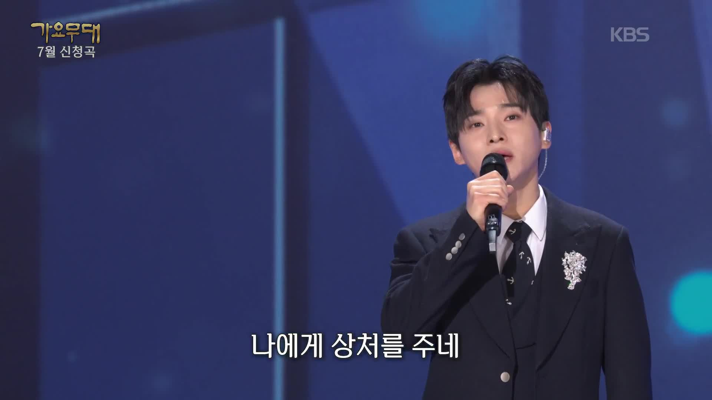
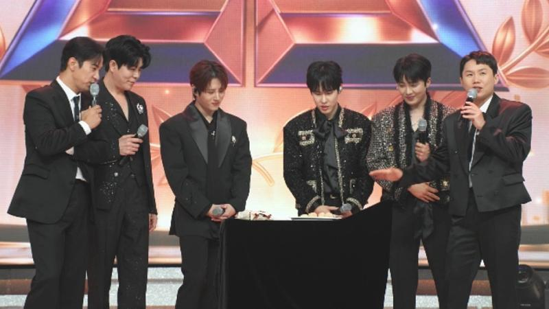
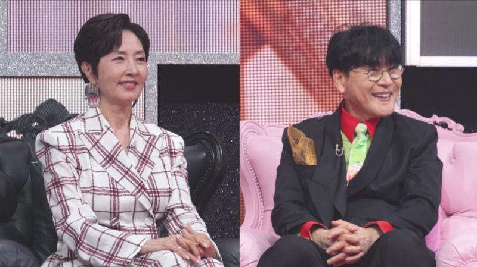
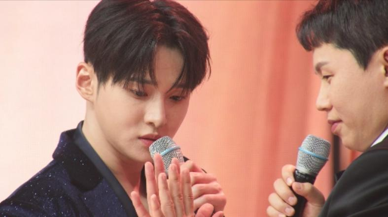
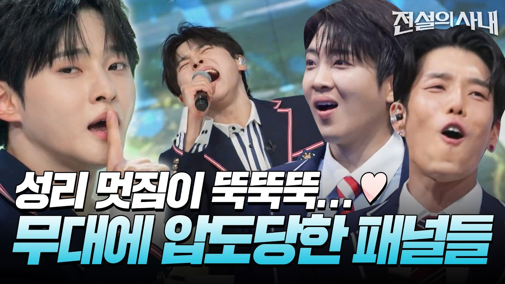

전설의 사내 성리, 양세형에 기습 키스 플러팅
양순이로 변신한 양세형 앞에서 성리가 꺼낸 플러팅은?

가요무대에서 노래하는 성리, 과거 방송 자료사진 · 출처: KBS 홈페이지단정한 정장 차림의 성리, 무대마다 달라지는 모습이 반갑네요.
전설의 사내 성리가 양세형을 향한 기습 키스 퍼포먼스를 예고했어요.
사랑 노래 대결을 앞두고 벌어진 플러팅 게임이라고 하는데요. 성리를 응원하는 입장이라 어떤 장면일지 더 궁금합니다.
턱시도 입은 TOP7, 전설 어워즈로

전설 어워즈의 게임에 함께한 출연진과 양세형 · 출처: MBN반짝이는 재킷과 턱시도가 모여 있으니 시상식 분위기가 나네요.
전설의 사내 16회는 전설 어워즈 특집으로 꾸며져요.
성리·하루·장한별·황윤성·정연호·이창민·이루네가 함께하고, 배아현·김중연·노지훈·송민경도 출연합니다.
TOP7이 턱시도 차림으로 등장한다고 하니, 평소와 다른 시상식 분위기도 기대되네요.
정수라·조항조가 심사위원으로

심사석에 함께한 정수라와 조항조 · 출처: MBN나란히 앉아 웃는 두 선배의 표정이 편안해 보여요.
시상식 주최자이자 심사위원은 정수라와 조항조예요.
두 선배 가수 앞에서 후배들이 노래 대결을 펼치는데요. 이름도 독특한 시상 부문들이 준비돼 있어요.
성리·이창민·정연호의 심장손상 대결
 전설의 사내 TOP7 공식 홍보 자료사진 · 출처: MBN 홈페이지
전설의 사내 TOP7 공식 홍보 자료사진 · 출처: MBN 홈페이지빨간 의상도 각자 다르게 소화한 TOP7의 모습이 눈에 들어오네요.
성리는 이창민, 정연호와 함께 사랑 노래로 겨루는 심장손상 부문에 나섭니다.
노래를 부르기 전에 순서를 정하는 게임부터 치르게 되는데요. 상대의 마음을 사로잡을 플러팅 기술을 보여주는 미션이에요.
양순이에게 다가간 성리의 기습 키스

성리와 양세형의 플러팅 게임 예고 장면 · 출처: MBN손을 내민 성리와 그쪽을 바라보는 양세형, 다음 장면이 궁금해지네요.
게임의 상대는 양순이로 변신한 MC 양세형이에요.
성리는 적극적으로 다가가 기습 키스 퍼포먼스까지 선보인다고 합니다.
진지한 사랑 노래 대결에 앞서 이런 장면이 나온다니, 양세형의 반응도 놓치기 어렵겠네요.
플러팅 다음에는 본격적인 사랑 노래

전설의 사내 성리 무대 공식 썸네일, 과거 방송 자료 · 출처: MBN Entertainment 공식 유튜브교복 스타일로 노래하는 모습까지, 성리는 무대마다 분위기가 다르네요.
이번에 소개된 키스 퍼포먼스는 노래 대결에 앞선 예능 게임 장면이에요.
본무대에서는 세 사람이 사랑 노래로 경쟁할 예정인데요. 플러팅 게임과 노래 대결에서 누가 웃게 될지는 본방송에서 확인할 수 있습니다.
전설의 사내 성리가 장난기 가득한 게임 뒤에 어떤 노래를 들려줄지 기대됩니다.